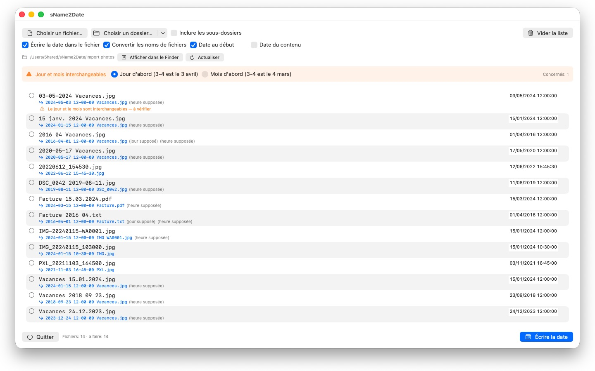
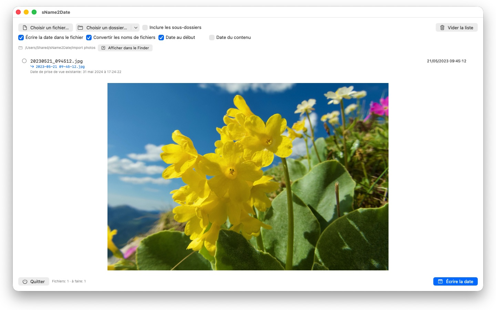

Une photo sans date de prise de vue ne se range nulle part. sName2Date extrait la date du nom de fichier et l'écrit là où toute photothèque la cherche.


Beaucoup de photos et de films portent leur date dans le nom de fichier — mais pas là où les programmes la cherchent. Les images reprises d'une messagerie, d'un scanner ou d'une vieille archive donnent des fichiers comme IMG_20240115_103000.jpg ou Vacances 15.01.2024.jpg, qui apparaissent avec la date du jour dans toutes les photothèques.
sName2Date lit la date dans le nom de fichier et l'écrit comme date de prise de vue dans le fichier. S'il n'y en a pas encore, elle est créée.
ÉCRITURES RECONNUES
Date et heure dans les formes courantes, entre autres :
- 2024-01-15 10-30-00
- IMG_20240115_103000
- IMG-20240115-WA0001
- 2024-01-15 · 2024 01 15 · 2024_01_15
- 15.01.2024 · 15-01-2024 · 15.01.24
- 15 janv. 2024 · 15 mars 2024 · January 15 2024
- 2016 04 · 04-2016 — année et mois seulement
Les noms de mois écrits en toutes lettres sont lus dans la langue de votre système et en anglais, sous leur forme longue comme abrégée.
Si le nom ne porte qu'une date, une heure est supposée ; c'est vous qui décidez laquelle. Si le jour manque également, le premier du mois s'applique — la ligne le précise. Si plusieurs dates figurent dans le nom, la première l'emporte. Et là où le jour et le mois seraient interchangeables, c'est votre réglage qui tranche — les fichiers concernés sont signalés au lieu d'être devinés en silence.
Si le nom ne contient aucune date, vous la saisissez vous-même à droite de la ligne. Cela remonte jusqu'à 1826, l'année de la plus ancienne photographie conservée — une prise de vue numérisée du XIXe siècle se date donc aussi bien que celle d'hier.
CE QUI EST MODIFIÉ
Sont écrits EXIF DateTimeOriginal et DateTimeDigitized ainsi que TIFF DateTime, et pour les films et les enregistrements sonores la date de création inscrite dans le conteneur. Sur demande, également les dates de création et de modification du fichier lui-même.
Les données d'image restent intactes : un JPEG n'est pas recompressé, un film n'est pas réencodé. Pour les films et les enregistrements sonores, l'app ne modifie en règle générale que quelques octets dans le conteneur au lieu de le réécrire — même un film volumineux est ainsi traité en un instant.
Une date de prise de vue est accueillie par JPEG, PNG, TIFF, HEIC et GIF, ainsi que par les formats vidéo MP4, MOV et M4V et les formats audio M4A et M4B.
MÊME LES FICHIERS QUI NE PEUVENT PAS PORTER DE DATE DE PRISE DE VUE
Un PDF, un fichier texte, un tableur n'a aucun champ pour une date de prise de vue — et figure malgré tout dans la liste. sName2Date y inscrit les dates de création et de modification du fichier, le seul endroit où l'indication puisse aboutir ; la ligne le signale par une coche orange au lieu d'une coche verte. Ici, aucune extension ne compte — PDF, texte, tableurs, archives, tout.
Si le fichier ne doit pas être touché du tout, vous décochez en haut de la fenêtre la case « Écrire la date dans le fichier ». sName2Date met alors seulement le nom à l'écriture ISO : Facture 15.03.2024.pdf devient 2024-03-15 12-00-00 Facture.pdf, et dans le Finder le dossier se trie ensuite par date. Sur demande, la date reste là où elle figurait dans le nom au lieu de passer au début.
TOUT PEUT ÊTRE ANNULÉ
Un passage complet s'annule avec Cmd+Z — date de prise de vue, horodatages du fichier et nom de fichier modifié. Cmd+Shift+Z le rétablit.
DES DOSSIERS ENTIERS
sName2Date traite des arborescences entières en une seule fois et peut ignorer les fichiers qui portent déjà une date de prise de vue. Elle retient les dossiers que vous avez autorisés et ne les redemande jamais.
sName2Date Lite · Gratuit — L'édition pour un fichier par passage : écrire la date du nom de fichier comme date de prise de vue dans une photo, un film ou un enregistrement audio, la définir à la main, mettre le nom en notation ISO et tout annuler avec ⌘Z — les mêmes fonctions que sName2Date, mais sans dossiers entiers.
- Nécessite macOS 12 ou version ultérieure
- 24 langues
- Assistance : SwiftAppsBavaria@gmx.net
Autres apps
sCollect
Organiser musique, films, livres audio, livres numériques et autres collections dans une médiathèque.
sVectorLift
Ouvrir, visualiser et enregistrer en SVG d'anciens cliparts vectoriels : CorelDRAW, Windows Metafile et CGM.
SwiftRename
De la carte mémoire à l’archive : nommer photos et vidéos d’après l’heure de prise de vue, les classer par année et par mois, repérer les doublons — RAW compris.
sCollectPlay
Le lecteur de la médiathèque : lire musique, films, livres audio et podcasts simplement depuis un dossier, un fichier XML iTunes ou une médiathèque sCollect, sans rien modifier aux tags des fichiers. Avec listes de lecture, pistes audio et de sous-titres et, pour les films, ralenti et avance image par image. Ce que macOS ne lit pas lui-même, comme MKV, AVI ou DSD, est confié à un lecteur externe.
sCollectPlay Lite
L'édition allégée de sCollectPlay : ouvrir simplement un dossier, un fichier XML iTunes ou une médiathèque sCollect et y lire musique, films, livres audio et podcasts, avec listes de lecture, pistes audio et de sous-titres, ralenti et avance image par image. Une source par session ; le navigateur en colonnes, les listes de lecture personnelles et les sources récemment utilisées sont réservés à la version complète.
sBikeBridge
Analyser ses sorties à vélo sans les téléverser sur un portail : importer les fichiers FIT de tout compteur vélo qui enregistre dans ce format, ainsi que GPX et TCX. Les sorties sont conservées dans une bibliothèque propre sur le Mac, avec carte, puissance et fréquence cardiaque, photos et notes ; l'import détecte les doublons. Des indicateurs par année ou par mois et des filtres par distance, dénivelé et durée rendent les sorties comparables. Sur demande, la carte est aussi disponible hors ligne.